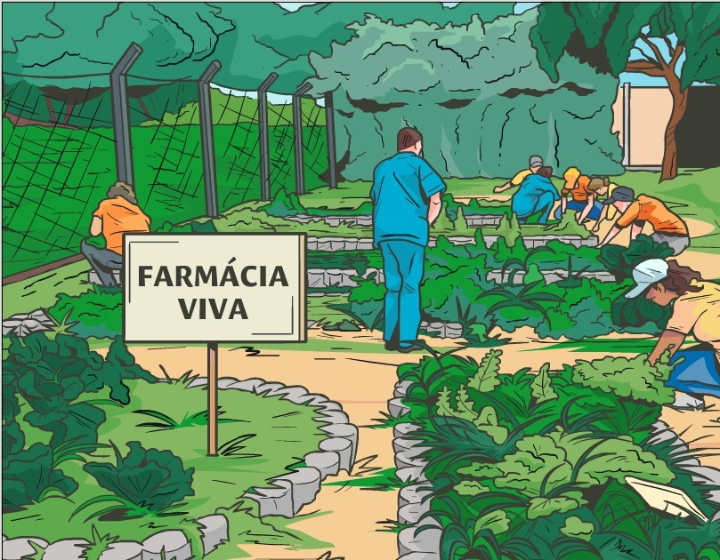

Tais normas contribuem para atender aos pressupostos da Atenção Primária, que deve atuar de forma territorializada no âmbito do SUS. Portanto, hortos medicinais e farmácias vivas são estratégias para reconhecimento e valorização das espécies utilizadas pela população, de modo que o conhecimento local seja valorizado. Tal medida é importante para propiciar o diálogo entre saberes tradicionais e científicos, a fim de compreender diferentes visões sobre doença e saúde.
Por fim, a Etnofarmacologia como ciência aplicada, é capaz de orientar políticas de saúde baseadas em evidências tradicionais e científicas, em sintonia com princípios de sustentabilidade, equidade e soberania nacional.